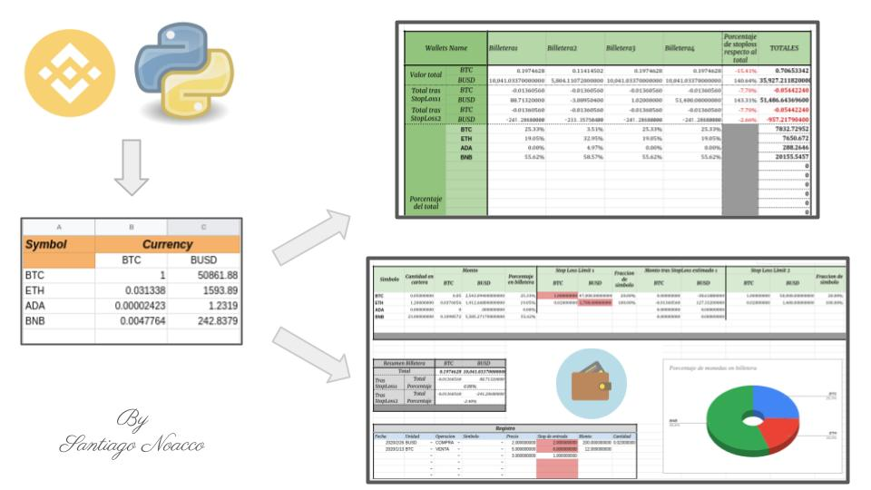
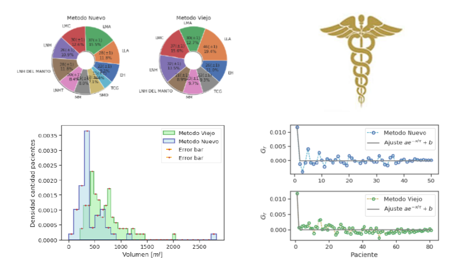

Born and raised in Patagonia,
I grew up very close to nature which I believe seed a passion for the world around me.
I recall being very curious since an early age,
and thankfully I carried that to eventually pursue a carrier in Physics.
Along my journey I not only fulfilled that hunger for knowledge but also I found myself in a never ending playground
...

This project encompasses the development of a Convolutional Neural Network framework,
the build of the data pipeline,
its deployment and the statistical consistency to identify photons.
It began as my Master Thesis project and it later evolved to become part of my PhD,
due to the great potential the ATLAS team saw on it.
The task of correctly identifying photons from events,
plays a fundamental role for the collaboration since photons are one of the main objects used in all searches (analysis) directly or indirectly across every experiment.
So far, the obtained results are astonishing when compared to previous implementations,
getting an overall over 20% improvement.
The full framework has been developed using C++, Python, Keras and TensorFlow.

Vicsek model for an autonomous system 2D simulation study on an angular vs vectorial noise driven dynamics.
Powered by Fortran and Python this project showcases my understanding of physics models, on how to build a simulation and on statistical analysis.

This project was commissioned to me through
Freelancer
with the objective to build a simple interface in Excel,
to keep track of crypto trades.
Among its capabilities you will be able track the price of any cripto-symbol available in Binance,
as well as your holdings in different wallets.
It is also possible to test stop_loss values,
keep a record of your trades,
and see relevant statistical information such as holdings percentages distribution,
overall earnings and more.
It is powered by two components,
an automatic data-fetcher-engine powered by Python using Binance-API (which can be used locally or web-based on GoogleColab),
and a semiautomatic visualizer/dashboard powered by GoogleSheets.

This was a project I carried out for a PhD student in Medicine.
I go over a medical dataset to assert the effectiveness of a novel apheresis method developed by the costumer.
Employing basic statistical techniques such as hypothesis testing and linear regressions I conclude that the introduced method is highly superior than its predecessor,
resulting in a 42(5)% efficiency increase,
a 33(9)% increase in security (reduction of toxicity) and an estimated annual savings of 12.3(4.1)k u$.
All of this carried out using Python3, SciPy, NumPy and others.

Powered by Matplotlib and Bokeh for the visualization aspect,
I developed a python package that integrates with JupyterNotebooks to effectively, easily, beautifully and quickly show relevant plots.